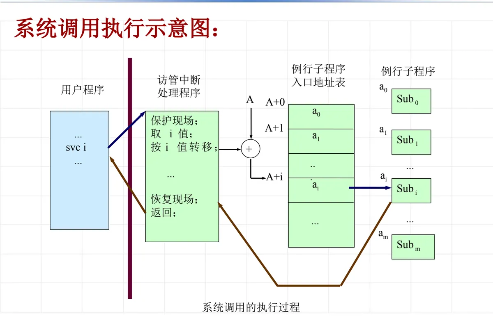
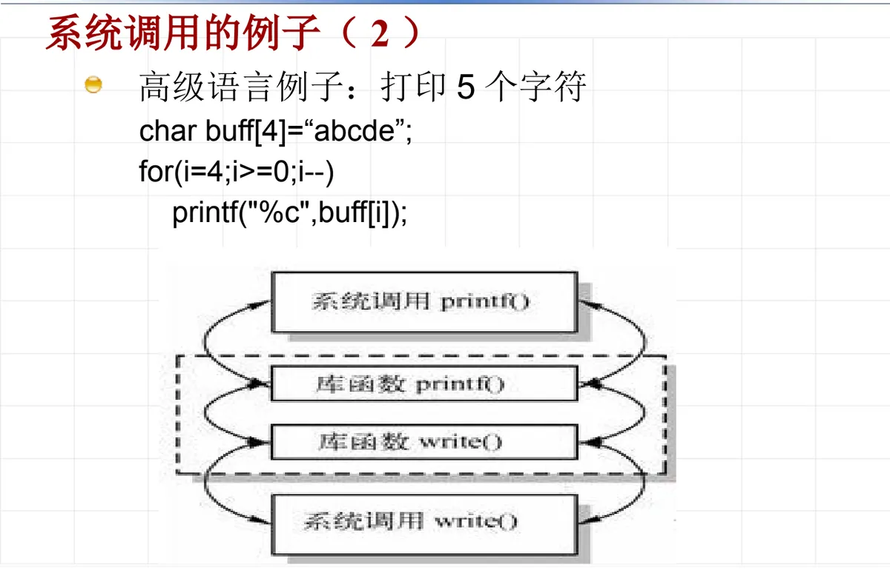
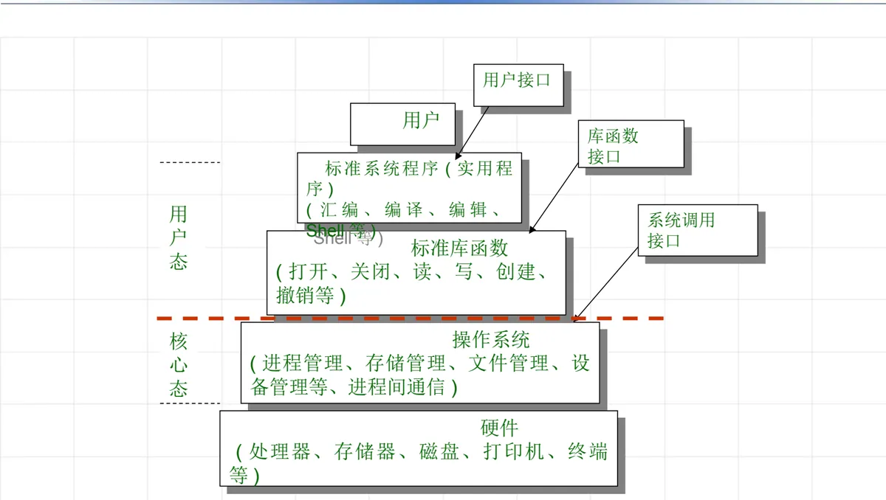

操作系统原理 · 第 3 章 用户接口
3.4 系统功能调用
上一节说的是「人」怎么用操作系统，这一节说的是「程序」怎么用操作系统——这就是系统功能调用（简称系统调用）。它是操作系统提供给编程人员的唯一接口，也是用户程序从用户态跨进核心态的唯一合法通道。这一节从系统调用的定义讲起，说清它的实现机制（访管指令与功能号）、与库函数的区别、POSIX 国际标准，最后落到常用的系统调用清单和 Linux 的具体实现。
1. 什么是系统功能调用
系统功能调用是用户在程序一级请求操作系统服务的一种手段。要特别注意它的性质：它不是一条简单的函数调用硬件指令，而是带有一定功能号的「访管指令」。也就是说，系统调用的功能并非由硬件直接提供，而是由操作系统中的一段程序完成的，即由软件方法实现的。硬件只负责把处理机从用户态切到核心态并把控制权交出去，真正干活的是操作系统内核里的例行子程序。
2. 系统调用的实现
系统调用是操作系统提供给编程人员的唯一接口。利用系统调用，可以动态请求和释放系统资源、完成与硬件相关的工作以及控制程序的执行。不同的操作系统，系统调用实现的具体方法有所不同，但其实质是相同的，都遵循下面几条共同点：
- 采用统一的方式，由硬件提供访管指令（访管中断）：
svc i； - 每个系统调用对应一个系统调用号；
- 每个系统调用对应一个执行程序段；
- 每个系统调用要求一定数量的输入参数和返回值。
系统调用的执行过程可以概括为：用户程序在需要服务时发出一条 svc i 访管中断；访管中断处理程序先保护现场，再取出 i 值，按 i 值转移，经入口地址表找到第 i 号例行子程序并执行；执行完恢复现场、返回用户程序。整个过程如下图所示：

svc i 触发访管中断，处理程序保护现场、取功能号 i 并按键值转移，经入口地址表进入第 i 号例行子程序，返回前恢复现场（原课件第 43 张）3. 访管中断与功能号
操作系统提供实现各种功能的例行子程序，其中的每一个功能对应访管指令的一个功能号。例如：
svc 0 显示一个字符
svc 1 打印一个字符串
...功能号就是用户程序与操作系统之间的「约定编号」：程序不必知道服务程序放在哪里、叫什么名字，只要给出功能号和参数，剩下的由操作系统按号查找并执行。
4. 系统调用的两个例子
（1）汇编程序例子：打印 5 个字符
用汇编语言调用操作系统的功能打印字符串，代码大致是这样：
OUTPUTS DB 'abcde'
MOV DX, OFFSET OUTPUTS
MOV AH, 09H
INT 80H不同系统的系统调用入口指令不同：Windows 用 INT 2eH，Linux 用 INT 80H。
注记：原课件把上面这段标为「调用 DOS 功能」，但 DOS 的经典功能调用入口是 INT 21H；INT 80H 是 Linux 的系统调用入口。此处照原课件保留，供对照理解。
（2）高级语言例子：打印 5 个字符
同样的功能用高级语言写，表面上只是调用了一个库函数 printf，而 printf 内部最终仍要通过系统调用把字符送到设备上：
char buff[4]="abcde";
for(i=4;i>=0;i--)
printf("%c",buff[i]);
注记：这段示例照原课件写作 char buff[4]，而长度为 5 的字符串加结尾的 '\0' 实际需要 6 个字节，循环取值也会越过数组边界。这里保留原样是为了与课件一致，实际编写时应注意数组长度。
5. 系统调用与访管指令的联系
两者经常被混为一谈，界线其实很清楚：
- 系统调用是操作系统提供的功能，由软件实现；访管指令是硬件指令，通过硬件实现（一般是一条中断指令）。
- 系统调用在核心态运行，必须通过访管指令才能进入核心态；访管指令可以带有一个不同的功能号来区分不同的系统调用。
换句话说，访管指令是「门」，功能号是「门牌」，系统调用是门里面真正提供的服务。
6. 系统调用函数与一般库函数的区别
系统调用一般都封装成高级语言函数的形式，于是它和普通库函数在写法上几乎一样，区别要落到三点上看：
- 代码归属：系统调用的代码属于 OS（驻留在内存），库函数的代码由其他软件提供、由编译工具链链接进用户程序；
- 处理机状态：系统调用代码的执行会引起 CPU 状态的变化——用户态 → 核心态；库函数的执行不会引起 CPU 状态的变化，始终在用户态；
- 因此，只有系统调用才需要付出状态切换的代价，也只有它能直接获得操作系统的服务。
7. 用户接口的整体层次
把用户看到的东西和内核提供的东西放在一起，操作系统的用户接口呈现出清晰的分层：最上面是用户；用户态一侧有标准系统程序（汇编、编译、编辑、Shell 等实用程序）和标准库函数接口；库函数之下是系统调用接口，它横跨用户态与核心态；核心态一侧是操作系统本身（进程管理、存储管理、文件管理、设备管理、进程间通信等）；再往下是硬件（处理器、存储器、磁盘、打印机、终端等）。

这张图也解释了上一节那句话为什么成立——任何操作系统都必须同时提供操作接口和程序接口：操作接口服务于图的最上层，程序接口就是图中的「系统调用接口」。
8. 系统调用函数的国际标准
为了让为一种 UNIX 编写的软件能方便地搬到另一种 UNIX 上，接口必须标准化，这就是 POSIX：它是 IEEE 为要在各种 UNIX 操作系统上运行的软件而定义 API 的一系列互相关联的标准的总称，正式称呼为 IEEE 1003，国际标准名称为 ISO/IEC 9945。其中与本课程关系最大的三个是：
- 1003.1：被广泛接受、用于源代码级别的可移植性标准，提供一个操作系统的 C 语言应用编程接口（API）。IEEE 和 ISO 已在 1990 年通过这个标准，IEEE 在 1995 年重新修订；
- 1003.1b：用于实时编程的标准（以前的 P1003.4 或 POSIX.4），1993 年被 IEEE 通过，被合并进 ISO/IEC 9945-1；
- 1003.1c：用于线程（在一个程序中当前被执行的代码段）的标准，以前是 P1993.4 或 POSIX.4 的一部分，1995 年被 IEEE 通过，归入 ISO/IEC 9945-1:1996。
Linux 完全兼容 POSIX 标准，因此按 POSIX 接口写的程序可以不加修改地在 Linux 上编译运行。
9. 常用的系统调用
按管理对象分类，常用的系统调用大致有三个方向。
（1）与进程管理有关的系统调用
| 系统调用 | 功能 |
|---|---|
| fork() | 建立一个进程 |
| exec() | 执行一个文件 |
| wait() | 等待子进程 |
| exit() | 进程中止 |
| signal() | 设置信号处理程序 |
| alarm() | 在指定时间后发送定时信号 |
| pause() | 等待信号 |
| nice() | 改变进程优先级 |
| ptrace() | 跟踪子进程 |
| brk() | 改变用户数据区大小 |
| sleep() | 等待一段时间 |
| kill() | 发送软中断 |
（2）与文件管理有关的系统调用
| 系统调用 | 功能 |
|---|---|
| open | 打开文件 |
| close | 关闭文件 |
| read | 读文件 |
| write | 写文件 |
| lseek | 修改读写位置 |
| creat | 建立并打开文件 |
| mknod | 建立设备文件 |
| link | 创建硬链接文件 |
| symlink | 创建软链接文件 |
| unlink | 删除文件 |
| chdir | 改变当前目录 |
| chmod | 改变文件属性 |
| pipe | 建立并打开管道文件 |
| chown | 改变文件主和用户组 |
| mount | 安装文件系统（卷） |
| dup | 复制文件描述符 |
| umount | 拆卸文件系统 |
（3）与系统状态有关的系统调用
| 系统调用 | 功能 |
|---|---|
| getuid | 取用户号 |
| setuid | 设置用户号 |
| getgid | 取用户组号 |
| setgid | 设置用户组号 |
| time | 取日历时间 |
| stime | 设置日历时间 |
| times | 取进程执行时间 |
| gtty | 读当前终端 tty 部分信息 |
| stty | 设置当前终端 tty 部分信息 |
| stat | 读取文件状态（i 节点） |
| sync | 使主存映像与磁盘文件信息一致 |
10. 不同系统的对应关系与 Linux 的实现
系统调用的功能各家都有，名字却未必相同。下面把 UNIX/Linux 的系统调用与 Windows 的 Win32 API 对应起来看：
| UNIX/Linux | Win32 | 说明 |
|---|---|---|
| fork | CreateProcess | 创建进程 |
| waitpid | WaitForSingleObject | 等待进程终止 |
| open/close | CreateFile / CloseHandle | 创建或打开／关闭文件 |
| read/write | ReadFile/WriteFile | 读／写文件 |
| lseek | SetFilePointer | 移动文件指针 |
| mkdir/rmdir | CreateDirectory / RemoveDirectory | 建立／删除目录 |
| stat | GetFileAttributesEx | 获得文件属性 |
在 Linux 内部，一个系统调用从用户态到内核实现要走一条固定的通路。以 getppid() 为例，用户态代码是：
int getppid(void)
{
return __kernel_vsyscall(__NR_getppid);
}其中 __NR_getppid 是系统调用号。linux-3.12 的内核源码里，这个通路是：
arch/x86/syscalls/syscall_32.tbl
arch/x86/include/generated/asm/syscalls_32.h
arch/x86/kernel/syscall_32.c
sys_call_table[__NR_syscall_max+1]
sys_call_table[__NR_getppid] = sys_getppid;
kernel/sys.c
SYSCALL_DEFINE0(getppid)也就是说：系统调用号在 syscall_32.tbl 中登记，并生成编号定义头文件；系统调用表由 syscall_32.c 安装，表中第 __NR_getppid 项登记为 sys_getppid；具体的执行函数在 kernel/sys.c 中用 SYSCALL_DEFINE0(getppid) 定义。
于是整个调用链就是：__kernel_vsyscall → sys_call_table[__NR_getppid] → sys_getppid()。
如果要在 Linux 内核里增加一个自己的系统调用，需要同时改两端。内核中添加：
SYSCALL_DEFINEx(mycall, ...)
{
printk("this my call\n");
return 0;
}应用层调用：
#define _GNU_SOURCE
#include <unistd.h>
#include <stdio.h>
int main()
{
syscall(__NR_mycall, ...);
return 0;
}本节小结
- 系统功能调用是用户在程序一级请求操作系统服务的手段，它是带功能号的访管指令，功能由操作系统的一段程序以软件方法实现，是操作系统提供给编程人员的唯一接口。
- 实现要点：硬件提供访管指令（访管中断）
svc i，每个系统调用对应一个调用号、一个执行程序段以及一定数量的输入参数和返回值；执行时保护现场、取 i 值、按 i 值转移，返回前恢复现场。 - 系统调用与访管指令的关系：前者是软件功能、在核心态运行，后者是硬件中断指令、是进入核心态的唯一通道，功能号用来区分不同的系统调用。
- 系统调用函数与库函数的区别在于代码归属（属于 OS 还是链接进用户程序）和执行时的处理机状态（用户态→核心态，还是始终用户态）。
- POSIX（IEEE 1003／ISO/IEC 9945）是系统调用接口的国际标准，1003.1 是可移植性标准，1003.1b 面向实时编程，1003.1c 面向线程；Linux 完全兼容 POSIX。
- 常用系统调用按进程管理（fork、exec、wait、exit、signal、kill 等）、文件管理（open、close、read、write、lseek、stat 等）和系统状态（getuid、setuid、time、gtty、sync 等）分类；不同系统名称不同，可对照 Win32 API；Linux 中由
sys_call_table按调用号分发到SYSCALL_DEFINEx定义的函数。